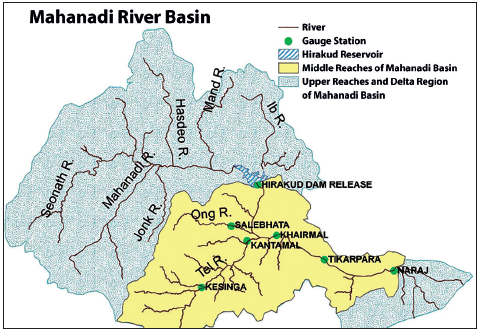
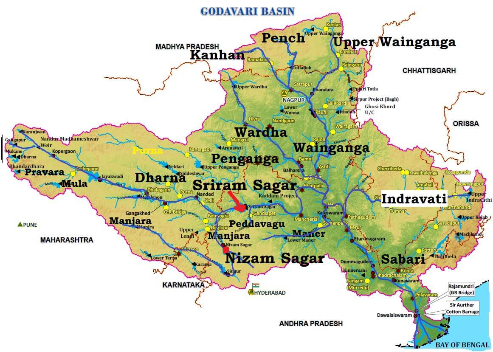
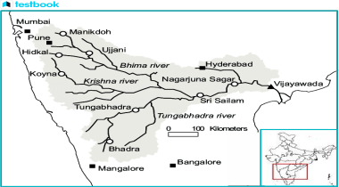
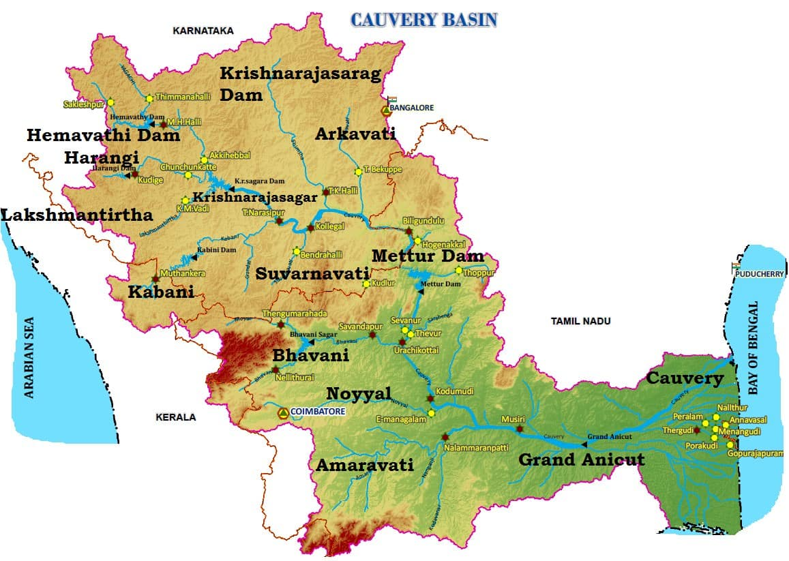
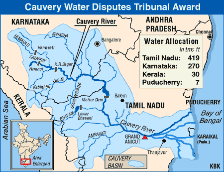
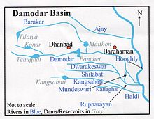
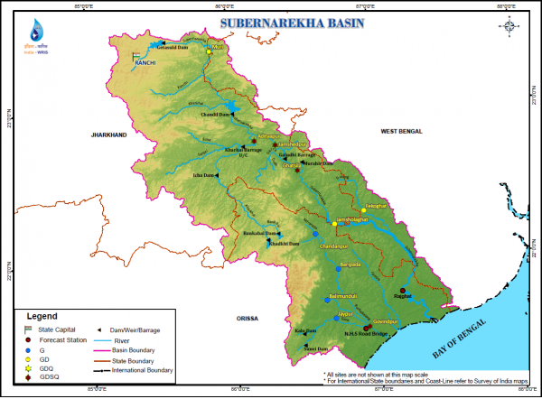

Drainage System — Peninsular River System (East Flowing Rivers)
Drainage System: Peninsular River System (East
Flowing Rivers)
The Indian Peninsula is characterized by ancient rivers much older than the
Himalayan Rivers , typically in a mature stage of development with broad, shallow,
and graded valleys .
The Western Ghats act as a water divide , directing most Peninsular rivers
●
eastward towards the Bay of Bengal , while smaller streams flow into the Arabian
Sea .
These rivers flow through the older geological formations of the Peninsula,
●
exhibiting the features of a mature drainage system .
Features of Peninsular Rivers
Low Gradients : Result in reduced velocity and load-carrying capacity , forming
1.
large deltas at river mouths.
Fixed Courses : Unlike Himalayan rivers, Peninsular rivers have fixed courses , with
2.
fewer meanders or features like ox-bow lakes .
Non-Perennial Flow : Most are non-perennial , flowing primarily during the
3.
monsoon season .
Unique Rift Valley Rivers : Narmada and Tapi flow westward through rift valleys ,
4. unlike most rivers that flow eastward.
Evolution of the Peninsular River System
Subsidence of the Western Flank : During the early tertiary period , the western
1. side submerged under the sea, disrupting the original drainage symmetry.
Upheaval of the Himalayas : Uplift of the Himalayas caused the northern
2.
Peninsular edge to subside , leading to faulting .
Slight Tilting of the Peninsular Block : A northwest-to-southeast tilt oriented
3.
rivers towards the Bay of Bengal .
Key Characteristics
Mature Drainage Pattern : Broad, shallow valleys with gentle slopes .
●
Eastward Flow : Rivers like the Godavari , Krishna , and Mahanadi flow into the Bay
●
of Bengal .
Western Ghats Watershed : Divides rivers flowing east and west.
●
Rift Valley Rivers : Unique features of Narmada and Tapi , with steeper gradients
compared to others.
This overview encapsulates the defining features and evolution of the Peninsular river
system , emphasizing its geological and hydrological significance.
East Flowing Rivers of Peninsular India
The east-flowing rivers of the Peninsular River System in India are distinguished by their courses that generally run from west to east, ultimately draining into the Bay of Bengal. These rivers are crucial for the region's agriculture, irrigation, and water supply. Below are some of the key east-flowing rivers of Peninsular India:
Mahanadi River
The Mahanadi River system is one of the major river basins in the Peninsular drainage system. It flows through the eastern part of the Indian subcontinent, shaping fertile plains and supporting a diverse range of ecosystems along its path.
With a total length of over 850 kilometers, the Mahanadi is vital for the states of Chhattisgarh and Odisha, making it one of the key rivers of central India.
Origin of Mahanadi River
The Mahanadi River originates from the Dandakaranya region in Chhattisgarh, with its source located about 442 meters (1,450 feet) near the village of Pharsiya in the Raipur district.
Course of the Mahanadi River System
The Mahanadi basin spans Chhattisgarh, Odisha, and smaller parts of Jharkhand, Maharashtra, and Madhya Pradesh. The river is bordered by the Central India hills to the north, the Eastern Ghats to the south and east, and the Maikala range to the west.
The Mahanadi is ranked second after the Godavari in terms of water potential and flood-producing capacity. It is well-known for being one of the most active silt-depositing rivers in the Indian subcontinent.
After merging with the Seonath River, it turns eastward and enters Odisha, passing through Sambalpur, where the Hirakud Dam forms a 55 km-long man-made lake. The river then flows into the Odisha plains near Cuttack, eventually emptying into the Bay of Bengal at False Point, with one of its mouths near Puri, a major pilgrimage site.

Tributaries of the Mahanadi River
The Mahanadi River has several important tributaries that contribute to its flow.
Left Bank Tributaries:
1. Seonath River: Originates from Panabaras Hill and provides crucial water resources for Durg District. 2. Hasdeo River: Flows south of Chhattisgarh through Bilaspur and Korba Districts. 3. Ib River: Originates in the hills of Raigarh district, flowing as a left-bank tributary.
Right Bank Tributaries:
1. Ong River: Originates from the Eastern Ghats in Odisha, supporting irrigation in the region. 2. Tel River: Flows from Kalahandi district in Odisha, contributing to local irrigation needs. 3. Jonk River: Originates from the Khariar plateau in Odisha, flowing into Chhattisgarh before joining the Mahanadi.
Dams on the Mahanadi River System
Several dams on the Mahanadi River system play a key role in water management and energy production:
1. Hirakud Dam: Located near Sambalpur, Odisha, it controls floods, provides irrigation, and generates hydroelectric power. 2. Gangrel Dam: Located in Dhamtari district, Chhattisgarh, it also serves water supply and power generation. 3. Dudhwa Dam: Situated in Dhamtari district, Chhattisgarh, it regulates water flow and provides irrigation.
Cities on the Mahanadi River System
Some of the key cities located along the Mahanadi River are:
Raipur Durg Cuttack These cities are crucial to the industrial and agricultural activities of the region.
Industries in the Mahanadi River Basin
The Mahanadi basin is rich in mineral resources and has a favourable climate for industries. Major industries in the region include:
Iron and Steel plant at Bhilai Aluminum factories at Hirakud and Korba Paper Mill near Cuttack Cement Factory at Sundargarh Additionally, the region also sees the mining of coal, iron, and manganese, as well as industries based on agricultural produce like sugar and textile mills.
Godavari River
With a total length of about 1,465 kilometers, the Godavari is the second-longest river in India and the largest river in Peninsular India. It is often referred to as the Dakshin Ganga or Vridha Ganga (old Ganga) due to its age, size, and importance. The river is navigable in its delta region, making it crucial for transport and irrigation.
Origin of Godavari River
The Godavari River originates from Trimbak, located in the Western Ghats of Nashik district, Maharashtra. It flows eastward and drains into the Bay of Bengal, forming a large delta near Rajahmundry.
Course of the Godavari River System
The Godavari basin spans several states, including Maharashtra, Andhra Pradesh, Chhattisgarh, Odisha, and smaller parts of Madhya Pradesh, Karnataka, and Puducherry (Yanam). The basin is surrounded by:
Satmala Hills, Ajanta Range, and Mahadeo Hills to the north, Eastern Ghats to the south and east, and Western Ghats to the west. Rajahmundry is the largest city along the river. Below Rajahmundry, the river splits into two main branches:
Gautami Godavari (east), Vashishta Godavari (west). The delta of the Godavari is of the lobate type, characterized by a round bulge and multiple distributaries.

Tributaries of Godavari River
The Godavari River has numerous left-bank and right-bank tributaries that contribute to its flow.
Left Bank Tributaries:
1. Dharna River 2. Penganga River 3. Wainganga River 4. Wardha River 5. Pranahita River (formed by the confluence of Penganga, Wainganga, and Wardha) 6. Pench River 7. Kanhan River 8. Sabari River 9. Indravati River Important Left-Bank Tributaries:
Painganga River: Originates from the Ajanta ranges, flowing through Maharashtra and Andhra Pradesh. Wardha River: Originates in Madhya Pradesh, flows through Maharashtra, and joins with Wainganga to form Pranahita. Wainganga River: Originates from the Satpura Range and joins with Wardha to form the Pranahita, which flows into the Godavari.
Right Bank Tributaries:
1. Pravara River 2. Mula River 3. Manjra River 4. Peddavagu River 5. Maner River Important Right-Bank Tributary:
Manjra River: Originates from the Balaghat range, flows through Maharashtra, Karnataka, and Andhra Pradesh, and has the Nizam Sagar Dam built across it.
Cities on the Godavari River
The Godavari River passes through various cities, including Rajahmundry, which is the largest city along its course. Other cities on the banks of the river include:
Nashik (origin point in Maharashtra) Aurangabad Adilabad Warangal Rajahmundry (major city in Andhra Pradesh)
Projects on the Godavari River System
Several significant projects have been constructed on the Godavari River, including:
1. Srirama Sagar Project 2. Godavari Barrage 3. Upper Penganga 4. Jaikwadi 5. Upper Wainganga 6. Upper Indravati 7. Upper Wardha Notable ongoing projects include:
Pranhita-Chevalla Project Polavaram Project These projects play a crucial role in irrigation, flood control, and power generation.
Floods and Droughts in Godavari Basin
The Godavari basin faces both flooding and drought issues. The lower regions, particularly the delta areas, are prone to floods, while the coastal areas are also vulnerable to cyclones. The flat topography of the delta causes drainage congestion, exacerbating flood risks. A large portion of the Marathwada region in Maharashtra, part of the basin, is drought-prone, impacting agricultural productivity and water availability.
Krishna River
The Krishna River originates from Mahabaleshwar, near Jor village in the northern part of Satara district, Maharashtra. The river originates at an elevation of 1,300 meters above sea level in the Western Ghats. The river is known for causing significant soil erosion during the monsoon season, making it ecologically one of the most problematic rivers in the world.

Course of Krishna River System
The Krishna River flows from its origin in the Satara district of Maharashtra, traveling eastward through the states of Maharashtra, Karnataka, and Andhra Pradesh before it empties into the Bay of Bengal.
The basin of the Krishna River is bounded by the Balaghat range to the north, the Eastern Ghats to the south and east, and the Western Ghats to the west. The central part of the basin is dominated by agricultural land, which covers about 75.86% of the total area.
Tributaries of Krishna River
The Krishna River has several right-bank and left-bank tributaries that play a key role in its flow and water supply.
Right Bank Tributaries:
1. Venna River 2. Koyna River 3. Panchganga River 4. Dudhganga River 5. Ghataprabha River 6. Malaprabha River 7. Tungabhadra River Detailed Overview of Important Right Bank Tributaries:
Koyna River: Originates in Mahabaleshwar, Maharashtra. It flows north-south, unlike most other rivers in the state, and is known for the Koyna Dam, which is the largest hydroelectric project in Maharashtra. Panchganga River: Formed by the confluence of four streams – Kasari, Kumbhi, Tulsi, and Bhogawati – it flows through the Kolhapur district. Dudhganga River: An important river in Kolhapur, Maharashtra, where the Kallammawadi Dam has been built. Tungabhadra River: Formed by the merging of the Tunga and Bhadra rivers, it flows through Karnataka and Andhra Pradesh. Major urban centers along the river include Harihar, Hospet, and Kurnool.
Left Bank Tributaries:
1. Bhima River 2. Dindi River 3. Peddavagu River 4. Halia River 5. Musi River 6. Paleru River 7. Munneru River Detailed Overview of Important Left Bank Tributaries:
Bhima River: Originates in the Bhimasankar hills of Maharashtra, and flows through Maharashtra, Karnataka, and Andhra Pradesh. Musi River: Originates in the Anantagiri Hills, near Vikarabad, Telangana. The Osmansagar Reservoir, Himayat Sagar, and Hussain Sagar are key projects on the Musi River, which also serves as a source of water for Hyderabad.
Cities on Krishna River
Several important cities are situated on the banks of the Krishna River, which contributes to its cultural, economic, and industrial significance. These cities include:
Satara, Karad, Sangli in Maharashtra, Bagalkot in Karnataka, Srisailam, Amaravati, and Vijayawada in Andhra Pradesh. Vijayawada, located near the Prakasam Barrage, is an important urban and tourist center on the Krishna River.
Dams on Krishna River
The Krishna River system has several dams that serve various purposes, including irrigation, hydropower generation, and flood control. Major dams on the Krishna River include:
1. Almatti Dam 2. Srisailam Dam 3. Nagarjuna Sagar Dam 4. Prakasam Barrage These dams have significantly contributed to the Green Revolution and the irrigation needs of the region. However, the river's flow fluctuates seasonally, depending on the monsoon, which affects the reliability of its water resources for irrigation.
Resources in Krishna Basin
The Krishna River basin is rich in mineral deposits and has significant industrial development potential. Major industries in the region include:
Iron and steel Cement production Sugarcane milling Vegetable oil extraction Rice milling Drought and Floods in Krishna Basin Parts of the Krishna River basin, particularly Rayalaseema in Andhra Pradesh, Bellary, Raichur, Dharwar, Chitradurga, and Bijapur in Karnataka, and Pune, Sholapur, Osmanabad, and Ahmednagar in Maharashtra, are drought-prone. The delta region is prone to flooding, particularly due to silt deposition that raises the riverbed and diminishes its carrying capacity. Coastal cyclonic rainfall further exacerbates the situation, leading to intense but short bursts of rainfall.
Major Projects on the Krishna River System
Several large-scale projects have been implemented on the Krishna River to improve irrigation, hydropower generation, and flood management. Key projects include:
1. Tungabhadra Project: Located near Hospet, Karnataka, this project provides hydroelectricity, irrigation, municipal water supplies, and flood control. 2. Srisailam Project: A major dam across the Krishna River in Kurnool district, Andhra Pradesh. The reservoir created by this dam is known as Srisailam Sagar. 3. Nagarjuna Sagar Dam: Built in the Nalgonda and Guntur districts of Andhra Pradesh, this was one of India's earliest major infrastructure projects for irrigation and power generation. 4. Prakasam Barrage: Constructed near Vijayawada, Andhra Pradesh, the barrage helps in water diversion for irrigation and supplies water to Vijayawada city. 5. Ghatprabha Project: Located on the Ghataprabha River near Chandgad, Maharashtra, the project serves both irrigation and hydroelectric purposes. 6. Bhima Project: This project is constructed across the Bhima River in Solapur district, Maharashtra, aiming to improve irrigation in the region.
Cauvery River
The Cauvery River is one of the most important rivers in Southern India. Spanning about 800 kilometers, it flows through the states of Karnataka and Tamil Nadu, providing irrigation and supporting ecosystems along its course. Known as the "Ganga of the South," the Cauvery has great cultural, historical, and economic significance for the people in these regions.
Origin of the Cauvery River
The Cauvery River originates at Talakaveri, located on the Brahmagiri range near Kodagu (Coorg) district in Karnataka. It flows south-east through the states of Karnataka and Tamil Nadu, eventually descending through the Eastern Ghats with magnificent waterfalls. Before emptying into the Bay of Bengal, it forms an extensive delta, known as the "Garden of Southern India."
The course of the Cauvery River
The Cauvery basin spans several states, including Tamil Nadu, Karnataka, Kerala, and Puducherry. The river originates from the South Karnataka Plateau, flows through the Tamil Nadu Plains, and cascades down the Sivasamudram Falls. The river splits into two branches, merging at Mekedatu (Goat's Leap), forming the boundary between Karnataka and Tamil Nadu. It then flows south, joining the Mettur Reservoir before being joined by several tributaries like the Bhavani, Noyil, and Amaravathi. After 16 kilometers, the branches unite, forming the Srirangam Island.

Tributaries of the Cauvery River
The Cauvery River has both left-bank and right-bank tributaries, each contributing to the river’s flow and water system.
Left Bank Tributaries:
Harangi Hemavati Shimsha Arkavati Right Bank Tributaries:
Lakshmantirtha Kabbani Suvarnavati Bhavani Noyil Amaravathi Key Tributaries:
Hemavati River: An important tributary, originating from the Western Ghats, it flows through Karnataka before joining the Cauvery. Kabini River: Originating from the Wayanad district of Kerala, the Kabini merges with the Cauvery and is home to rich wildlife, especially during summer. Amaravathi River: Originating from the Annamalai Hills, it contributes to the industrial water supply, though it faces pollution from textile dyeing units.
Soil Types in the Cauvery Basin
The basin is fertile, especially in the delta region. The principal soil types found in the basin include:
Black soils Red soils Laterite soils Alluvial soils Forest soils Mixed soils Red soils occupy large areas, while alluvial soils are prominent in the delta areas.
Monsoonal Influence
The monsoon plays a significant role in the Cauvery Basin's water system:
In Karnataka, the Southwest Monsoon primarily brings rainfall. In Tamil Nadu, the Northeast Monsoon contributes to the river's flow, especially during the winter season.
Hydroelectric Power Generation
The Cauvery River is a perennial river with a relatively consistent flow, making it suitable for irrigation and hydroelectric power generation. The river powers regions such as Mysore, Bengaluru, and the Kolar Gold Fields, and about 92-95% of its potential for irrigation and power generation has been harnessed.
Dams on the Cauvery River
Several dams and projects have been built on the Cauvery River and its tributaries, including: Krishnarajasagar Dam (Karnataka) Mettur Dam (Tamil Nadu) Lower Bhavani Dam Hemavati Dam Harangi Dam Kabini Dam Cauvery Water Dispute The Cauvery Water Dispute is a long-standing conflict between the states of Karnataka and Tamil Nadu over the river's water sharing. The issue dates back to agreements signed in 1892 and 1924, which established that construction projects on the river must get approval from the lower riparian states. The dispute revolves around equitable water distribution, with Karnataka and Tamil Nadu both relying on the Cauvery for irrigation and drinking water.

Damodar River
The Damodar River is one of the prominent rivers in eastern India, known for its importance in the regions of Jharkhand and West Bengal. It flows through a basin that is crucial for both agriculture and industrial activities and is often referred to as the "Sorrow of Bengal" due to its history of flooding, though dams have alleviated much of this impact.
Origin of Damodar River The Damodar River originates from the Chotonagpur Plateau in the state of Jharkhand. Specifically, it rises from the confluence of several small streams near the village of Khandoli, located at an altitude of approximately 610 meters (2,000 feet). The river flows westward before entering West Bengal.
Course of the Damodar River System The Damodar River runs for about 541 kilometers (336 miles), primarily through the states of Jharkhand and West Bengal. It flows eastward across Jharkhand, forming a natural boundary between the coalfields of Jharkhand and West Bengal. The river flows through the Damodar Valley, an area that has long been a center for coal mining, power generation, and heavy industries.
The river eventually joins the Hooghly River, a distributary of the Ganges, near the town of Kolkata. The basin of the Damodar has significant mining and industrial activity, particularly in coal-rich areas like Dhanbad and Jharia.

Tributaries of the Damodar River Some of the key tributaries of the Damodar River include:
Barakar River: A major left-bank tributary that originates in the Maikala Range in Madhya Pradesh and meets the Damodar near the town of Bokaro. Konar River: A tributary that drains the central part of Jharkhand and merges with the Damodar near Hazaribagh.
Dams on the Damodar River System The Damodar River has several important dams built to manage its flow, prevent flooding, and generate hydroelectric power. Some of these include:
Maithon Dam: Located in the Dhanbad district of Jharkhand, this dam is crucial for flood control, irrigation, and power generation. Tilaiya Dam: Located in Hazaribagh, Jharkhand, this dam helps with irrigation and electricity generation. Bokaro Dam: Located near the city of Bokaro, this dam provides irrigation and flood control.
Cities on the Damodar River System Several important cities are located along the Damodar River, including: Dhanbad: Known as the "Coal Capital of India," this city is an industrial hub, especially for coal mining. Bokaro: A major industrial city in Jharkhand, famous for its steel plant and other heavy industries. Kolkata: The capital of West Bengal, which lies near the mouth of the Damodar River as it merges with the Hooghly.
Industries in the Damodar River Basin The basin is rich in natural resources, particularly coal, making it one of India's most industrialized regions. Major industries in the area include:
Coal mining in Dhanbad and Jharia Steel plants in Bokaro and Durgapur Power plants, including thermal and hydroelectric stations
Subarnarekha River
The Subarnarekha River, meaning "river of gold," flows through the states of Jharkhand, West Bengal, and Odisha. The river is known for its scenic beauty and historical significance, as it was once believed to carry gold dust.

Origin of Subarnarekha River The Subarnarekha River originates from the Chhotanagpur Plateau in Jharkhand, near the village of Nagri, at an altitude of around 450 meters (1,480 feet). It flows in a northeast-southwest direction, eventually reaching the Bay of Bengal.
Course of the Subarnarekha River System The Subarnarekha River runs for a total length of about 395 kilometers. It flows through the state of Jharkhand and then enters West Bengal and Odisha. The river passes through several towns, including Jamshedpur (in Jharkhand), before emptying into the Bay of Bengal through a series of distributaries.
Tributaries of the Subarnarekha River The Subarnarekha has some tributaries that contribute to its flow, including:
Karkari River: A major tributary that originates in the Hazaribagh district. Kharkai River: Another key tributary that joins the Subarnarekha near Jamshedpur. Dams on the Subarnarekha River System There are several dams along the Subarnarekha to manage water resources and provide irrigation and power generation:
Subarnarekha Multipurpose Project: Located near the confluence of the Kharkai and Subarnarekha Rivers, it is crucial for irrigation and power supply. Tata Steel's Dams: The steel plant at Jamshedpur, which relies on water from the river, has built dams for both industrial use and flood control.
Cities on the Subarnarekha River System Key cities along the Subarnarekha include:
Jamshedpur: An industrial city in Jharkhand, home to the Tata Steel plant. Kolkata: Although it is more associated with the Hooghly, the Subarnarekha also affects the eastern part of the region.
Industries in the Subarnarekha River Basin The Subarnarekha basin is significant for its industrial activity, particularly:
Steel manufacturing (e.g., Tata Steel in Jamshedpur) Mining of minerals, including iron ore and coal Agriculture and irrigation in the fertile plains of Jharkhand and West Bengal